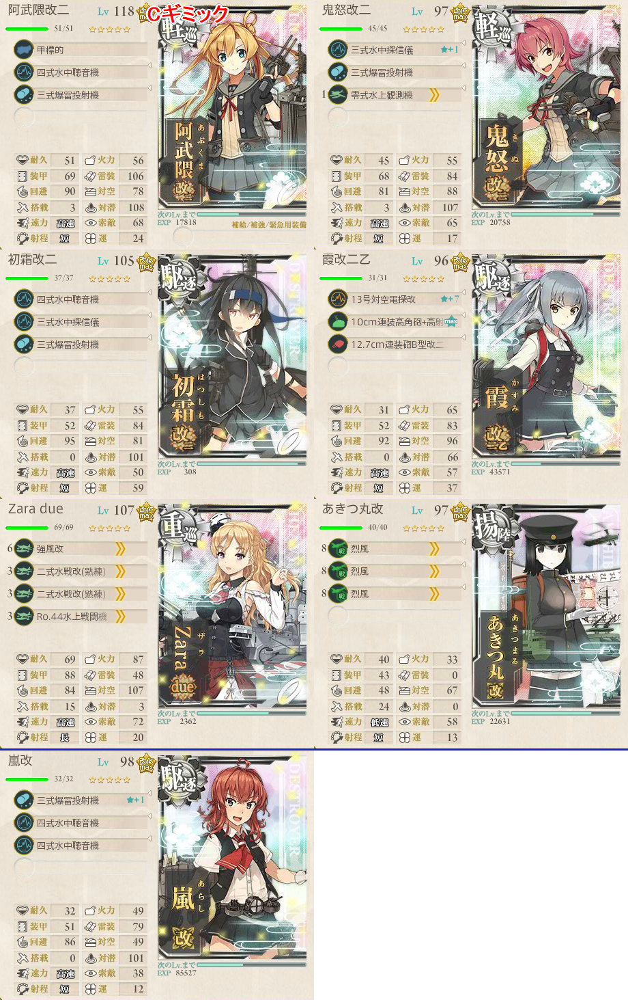
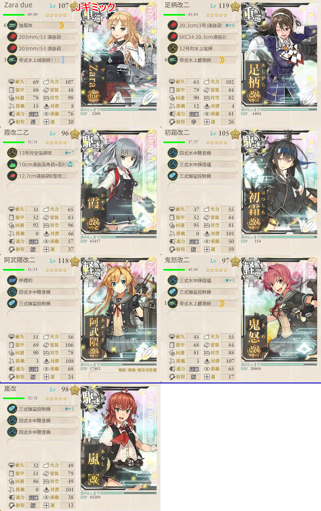
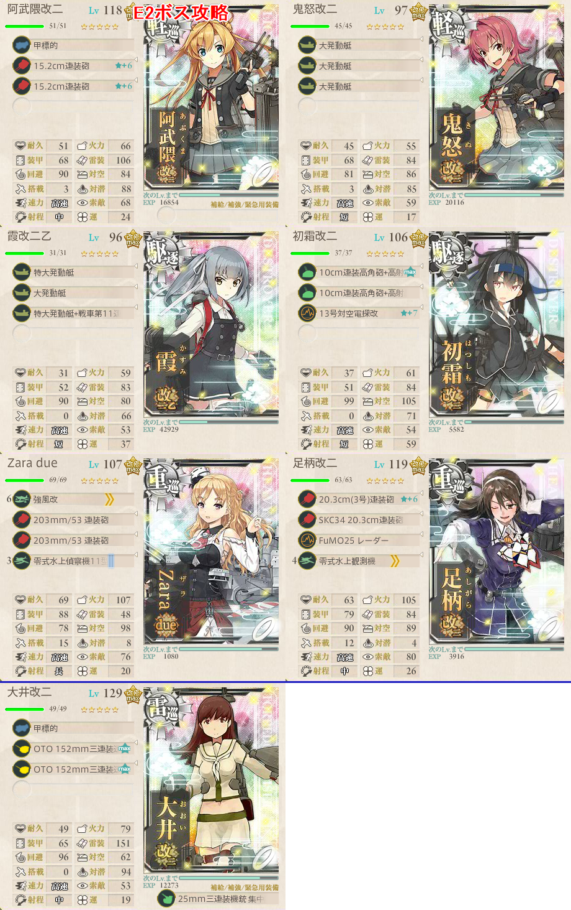

【艦これ】捷号決戦！邀撃、レイテ沖海戦(前篇) E2
2017年秋イベント E2（乙作戦）
注意
- 第三艦隊を使うと7隻編成で出撃可能
- 間違って第一艦隊で出撃すると思わぬ艦にお札がついてしまうため注意
- 第一艦隊に正規空母を置いておくとミスを防げる
ギミック
- Cマスで航空優勢
- JマスでS勝利
甲作戦の場合はDマスでも航空優勢を取る必要がある模様。
構成
Cマスギミック
志摩艦隊（那智、足柄、阿武隈、霞、潮、不知火、曙）から2以上
軽空母を含むとDに反れるため、軽空母は使用不可
Aマスが潜水マスなので、可能であれば先制対潜要員を
- 4隻いると完全に無傷で突破でき、安定する
阿武隈、鬼怒、初霜、霞、Zara、あきつ丸、嵐
- E1で間違って鬼怒を使ったためここに含めています
- E3でルート固定要員になるため、未使用なら温存してください
基地航空隊は局地戦闘機ガン詰み（2マスなのでどれでも到達可能）
- なければ艦戦でとにかく制空を

Jマスギミック
ABFGJ
Jマスには潜水艦と輸送艦、そして駆逐艦が出る
旗艦が潜水艦のため、対潜重視で組みたい
ただし、道中で軽空母込の編成を相手にするため、対空もあると良い？
Zara、足柄、阿武隈、鬼怒、初霜、霞、嵐
基地航空隊はFマスにCギミックと同様の部隊を集中？
- 陸攻でつぶしたほうが良いかも
Jマスは潜水姫が硬めなので、単横陣
- 随伴の補給艦と駆逐艦は、Zaraで制空権取って昼連撃＋夜戦で潰していく

輸送作戦
Lマスに戦艦2隻が陣取っているため、火力艦を後方に置いて警戒陣が良い
最短はQLMNP
- 志摩艦隊から3以上
- 軽巡1以上, 駆逐2以上, 軽空母戦艦あきつ丸0
- 高速統一
- Zara、足柄、大井、阿武隈、鬼怒、霞、初霜
1戦増やすと戦艦と軽空母を1ずつ積めるらしい
- Italia、祥鳳、足柄、大井、阿武隈、霞、初霜
- ボス戦で航空優勢を見据えることができる
海域TP370（司令部レベル120）

- TP: 8x6（大発動艇） + 5x2（駆逐艦） + 2x2（軽巡） + 8（鬼怒補正） = 70
- ゲージ破壊までS勝利6回（370/70 = 5.2）
- ゲージ破壊までA勝利8回（370/49 = 7.55）
- 穴を開けられるなら戦闘糧食x4を搭載することでS勝利5回までに抑えられる
出撃ログ（乙）
Cマスギミック
| 回数 | 編成 | 33式 | ルート | 戦果 |
|---|---|---|---|---|
| 1 | 阿武隈 鬼怒 初霜 霞 Zara あきつ丸 嵐 | 16.82 | ABC | Cマス優勢 |
Jマスギミック
| 回数 | 編成 | 33式 | ルート | 戦果 |
|---|---|---|---|---|
| 1 | Zara 足柄 霞 初霜 阿武隈 鬼怒 嵐 | 37.67 | ABFGJ | JマスS勝利 新ルート開示 |
輸送作戦
| 回数 | 編成 | 33式 | ルート | 戦果 |
|---|---|---|---|---|
| 1 | 阿武隈 鬼怒 霞 初霜 Zara 足柄 大井 | 30.99 | QLMNP | S勝利（鈴谷） TP70 |
| 2 | 阿武隈 鬼怒 霞 初霜 Zara 足柄 大井 | 30.99 | QLMNP | S勝利（清霜） TP70 |
| 3 | 阿武隈 鬼怒 霞 初霜 Zara 足柄 大井 | 31.05 | QL | 大井大破 |
| 4 | 阿武隈 鬼怒 霞 初霜 Zara 足柄 大井 | 31.05 | QLMNP | S勝利（阿賀野） TP70 |
| 5 | 阿武隈 鬼怒 霞 初霜 Zara 足柄 大井 | 31.05 | QLMNP | S勝利（鬼怒） TP70 |
| 6 | 阿武隈 鬼怒 霞 初霜 Zara 足柄 大井 | 31.05 | QLMNP | S勝利（磯風） TP70 |
| 7 | 阿武隈 鬼怒 霞 初霜 Zara 足柄 大井 | 31.05 | QLMNP | A勝利（対馬） ゲージ破壊 |
敵編成
| マス | 敵航空戦力 | 敵潜水艦 | 備考 |
|---|---|---|---|
| A | なし | あり | 潜水艦x4 |
| C | あり | なし | 空襲戦 基地航空隊+制空290程度で優勢を確認 |
| F | あり | なし | 軽空母2 重巡1 軽巡1 駆逐2 |
| J | なし | あり | 潜水姫 潜水2 補給1 駆逐2 |
| Q | あり | なし | 空襲戦 |
| L | なし | なし | 戦艦2 軽巡1 駆逐3 単縦陣 ラストダンス時に駆逐が紫になる？ |
| M | あり | なし | 空襲戦 |
| P | あり | なし | ボス 重巡姫 軽空母1 戦艦1 紫駆逐1 駆逐2 |
| あり | なし | ラストダンス 重巡姫 軽空母1 戦艦2 紫駆逐2 | |